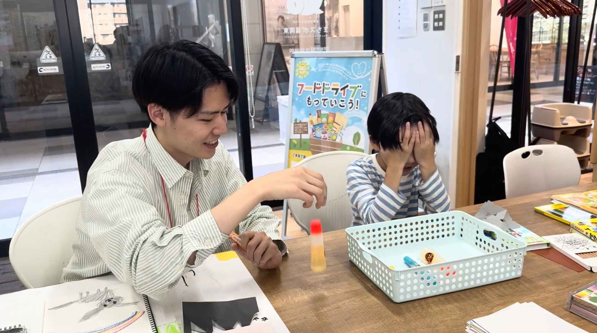
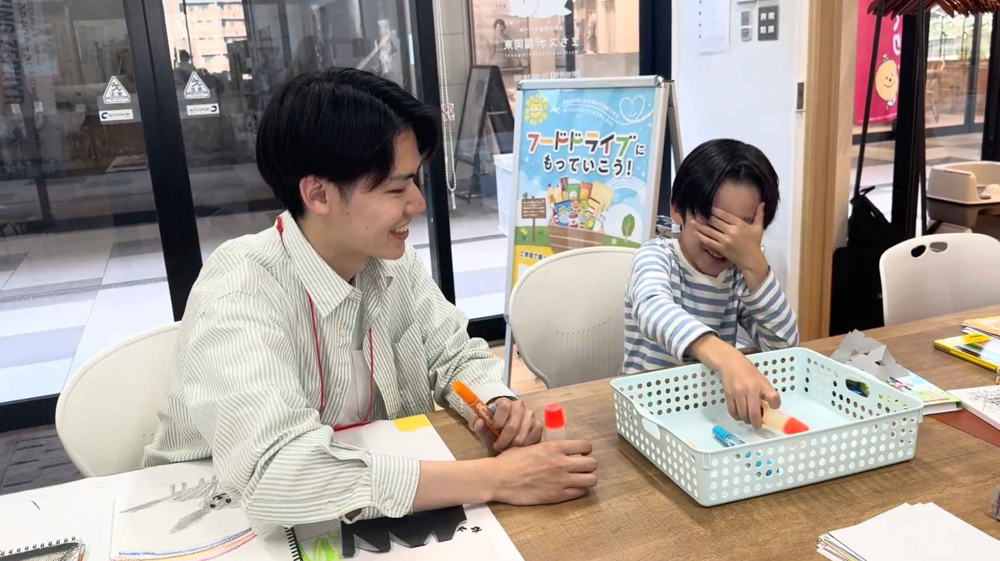

何が落ちたかな？ゲーム
ゲームのきほん
- 何をする？：ものが落ちた音を聞いて、手探りで落ちたものを探し出すゲーム
- 対象年齢：6歳以上
- プレイ人数：２人推奨、複数人も可
- プレイ時間：３〜5分
準備するもの
- クレヨン、マーカーペン、のりをそれぞれ2つずつ準備する。
- 文房具を入れるかご
遊び方


- 文房具を落とす人と探す人に分かれてゲームを行う。
- 落とす人が文房具を一つ選び、机の上に落とす。
- 探す人は目を瞑ったまま音を聞き、落ちたものと同じものをカゴの中から取り出す。
- 落としたものと同じものを手に取っていたらチャレンジ成功！
- 役割を変え、1〜4を繰り返す。
楽しく遊ぶためのヒント
- どこに落とすかで音が変わるため、机など硬い物の上だとゲームがしやすくなる。
- 音を聞いて物の硬さや重さなどを想像できると判別しやすくなる。
- あらかじめ、音や手触りを確認しておくと、ゲームをしやすくなる。